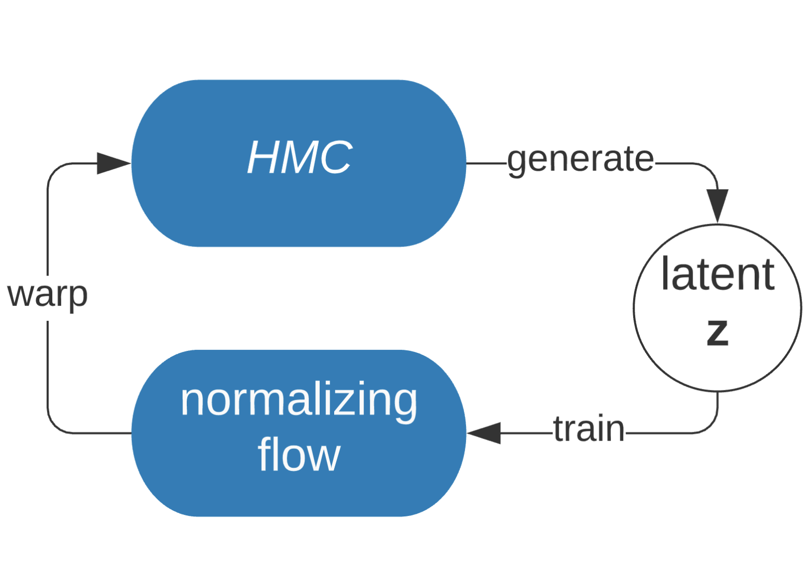
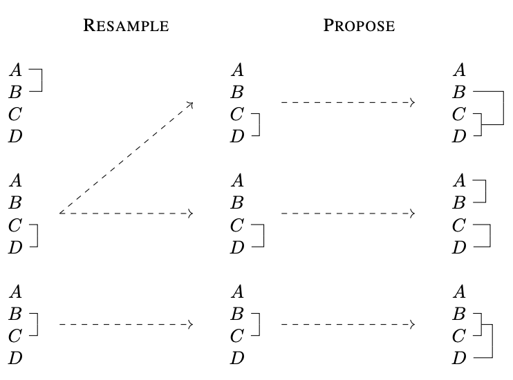
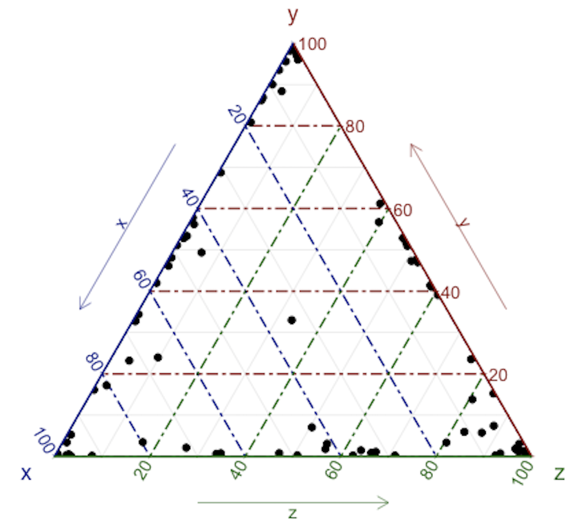
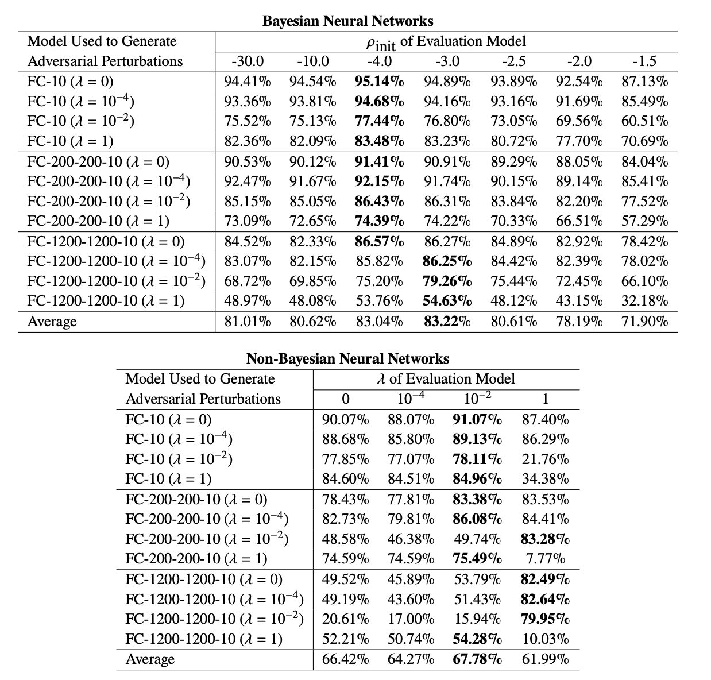

|
Background and Research Interests
|
|
I am an incoming Computer Science PhD at Princeton University, and did M.S. in Data Science and B.A. with Statistics and Applied Math majors at Columbia University. I am advised by professor David Blei during masters, and by professor Itsik Pe'er and professor Andrew Gelman during undergrad.
I am interested in artificial intelligence, with a focus on probabilistic methods and deep generative models. I aim to bring AI closer to humans – having human-like behaviors or becoming more interpretable. Although deep learning offers expressivity, its reasoning process is inadequately understood. Meanwhile, probabilistic modeling complements this weakness and has become fast and scalable. I work on combining these two areas in order to create expressive models with reliable uncertainty estimation, robustness, and a level of interpretability.
|
|
Publications and Preprints
|
|

|
Transport Score Climbing: Variational Inference Using Forward KL and Adaptive Neural Transport
Liyi Zhang,
Christian A. Naesseth,
David M. Blei,
Code.
Variational inference often minimizes the "reverse" Kullbeck-Leibler (KL) KL(q||p) from the approximate distribution q to the posterior p. Recent work studies the "forward" KL KL(p||q), which unlike reverse KL does not lead to variational approximations that underestimate uncertainty. This paper introduces Transport Score Climbing (TSC), a method that optimizes KL(p||q) by using Hamiltonian Monte Carlo (HMC) and a novel adaptive transport map. The transport map improves the trajectory of HMC by acting as a change of variable between the latent variable space and a warped space. TSC uses HMC samples to dynamically train the transport map while optimizing KL(p||q). TSC leverages synergies, where better transport maps lead to better HMC sampling, which then leads to better transport maps. We demonstrate TSC on synthetic and real data. We find that TSC achieves competitive performance when training variational autoencoders on large-scale data.
|
|

|
Variational Combinatorial Sequential Monte Carlo Methods in Bayesian Phylogenetic Inference
Antonio K. Moretti*,
Liyi Zhang*,
Christian A. Naesseth,
Hadiah Venner,
David M. Blei,
Itsik Pe'er,
Uncertainty in Artificial Intelligence 2021 (UAI). Code.
Bayesian phylogenetic inference is often conducted via local or sequential search over topologies and branch lengths using algorithms such as random-walk Markov chain Monte Carlo (MCMC) or Combinatorial Sequential Monte Carlo (CSMC). However, when MCMC is used for evolutionary parameter learning, convergence requires long runs with inefficient exploration of the state space. We introduce Variational Combinatorial Sequential Monte Carlo (VCSMC), a powerful framework that establishes variational sequential search to learn distributions over intricate combinatorial structures. We then develop nested CSMC, an efficient proposal distribution for CSMC and prove that nested CSMC is an exact approximation to the (intractable) locally optimal proposal. We use nested CSMC to define a second objective, VNCSMC which yields tighter lower bounds than VCSMC. We show that VCSMC and VNCSMC are computationally efficient and explore higher probability spaces than existing methods on a range of tasks.
Variational Combinatorial Sequential Monte Carlo in Bayesian Phylogenetic Inference
Antonio K. Moretti,
Liyi Zhang,
Itsik Pe'er,
Machine Learning in Computational Biology 2020 (MLCB). Code.
|
|

|
Model Stacking in Bayesian Phylogenetic Inference
Columbia Statistics - Undergraduate Summer Research Internship with Andrew Gelman
We develop stacking algorithm for phylogenetic inference by isolating discrete models, using MCMC-based methods in Stan for sampling on continuous parameters, and adopting stacking for model combination. Preliminary results support the hypothesis that stacking tends less to produce spuriously high model posteriors than Bayesian Model Averaging.
|
|

|
Improving Neural Network Robustness with Bayesian Weight Sampling
STCS 6701 Foundations of Graphical Models - Final Project. Code.
Deep neural networks are the state-of-the-art for various tasks and benchmarks, but they are often not robust to slight or even negligible input perturbations. On image classification tasks, for example, models with near-perfect accuracy can easily degrade to near-zero accuracy when the input images change by a tiny amount that is invisible to human. We propose to improve models’ robustness against input perturbations by adding diversity in model weights during training with Bayesian neural networks. Our experiments on an image classification benchmark shows that Bayesian neural networks are more robust than non-Bayesian deep neural networks trained with norm-based regularization. We claim that introducing diversity of model weights during model training improves models' robustness against input perturbations.
|
|